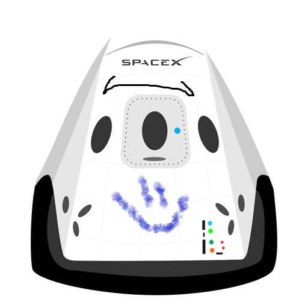

Hyperblog
Tu blog de confianza
Este es el título atractivo e interesante del post
Y este es el párrafo increíble donde vamos a explicar las cosas increíbles que se pueden hacer con ramas

Esta parte es un texto aleatorio para poder experimentar con la fusión que tendremos gracias a merge
sucribete